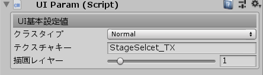

①UIパラメータ設定

- クラスタイプ
- UIを描画するクラスを設定します。設定できるクラスには、通常UIのほかに選択可能UIなどが指定できます。
- テクスチャキー
- UIスプライトに貼り付けるテクスチャの登録キーを設定します。ここで指定したキーがGame側で登録されていない場合、UIは真っ白状態で表示されます。
- 描画レイヤー
- 描画レイヤーを設定します。背景など一番背面に描画されるようものは、この値を小さくしていきます。背景など他のUIと重なる場合がある時は、描画レイヤーの指定は注意してしましょう。
まずは、Unityの画面サイズをGame側と同じように設定し（今回の場合1280px✖800px）UnityでUIを設定するように配置していきます。配置が終わったらUIparamを追加し設定を加えます。UIparamには、生成描画順・UIクラスタイプ・テクスチャキーの基本的名設定のほかに、呼ばれるシーンやUIクラスに付随する追加設定をすることができます。UIセットマップを書き出す際は、Unity標準のタグ設定でUIというタグに設定するとそのオブジェクトが書き出し対象になるので、書き出す際は忘れないようにしましょう。